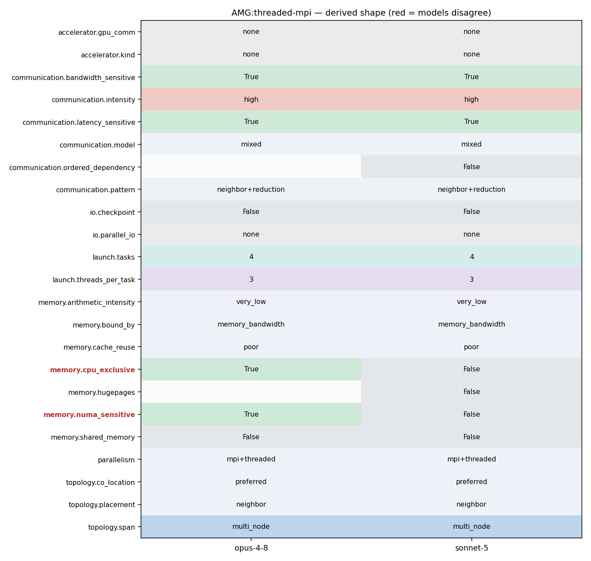

mpirun -np 4 amg -P 2 2 1 -n 50 50 50 (OMP_NUM_THREADS=3)
mpirun -np 4 amg -P 2 2 1 -n 50 50 50 -printstats (with OMP_NUM_THREADS=3)
76 77 C. Parallelism: 78 79 AMG is a highly synchronous code. The communications and computations 80 patterns exhibit the surface-to-volume relationship common to many parallel 81 scientific codes. Hence, parallel efficiency is largely determined by the size 82 of the data "chunks" mentioned above, and the speed of communications and 83 computations on the machine. AMG is also memory-access bound, doing only 84 about 1-2 computations per memory access, so memory-access speeds will also have 85 a large impact on performance.
244 local_num_rows = hypre_CSRMatrixNumRows(diag); 245 246 local_num_nonzeros = diag_i[local_num_rows] + offd_i[local_num_rows]; 247 hypre_MPI_Allreduce(&local_num_nonzeros, &total_num_nonzeros, 1, HYPRE_MPI_INT, 248 hypre_MPI_SUM, comm); 249 hypre_ParCSRMatrixNumNonzeros(matrix) = total_num_nonzeros; 250 return hypre_error_flag;
76 77 C. Parallelism: 78 79 AMG is a highly synchronous code. The communications and computations 80 patterns exhibit the surface-to-volume relationship common to many parallel 81 scientific codes. Hence, parallel efficiency is largely determined by the size 82 of the data "chunks" mentioned above, and the speed of communications and 83 computations on the machine. AMG is also memory-access bound, doing only 84 about 1-2 computations per memory access, so memory-access speeds will also have 85 a large impact on performance. 86 87 D. Test problems 88
76 77 C. Parallelism: 78 79 AMG is a highly synchronous code. The communications and computations 80 patterns exhibit the surface-to-volume relationship common to many parallel 81 scientific codes. Hence, parallel efficiency is largely determined by the size 82 of the data "chunks" mentioned above, and the speed of communications and 83 computations on the machine. AMG is also memory-access bound, doing only 84 about 1-2 computations per memory access, so memory-access speeds will also have 85 a large impact on performance. 86 87 D. Test problems 88
76 77 C. Parallelism: 78 79 AMG is a highly synchronous code. The communications and computations 80 patterns exhibit the surface-to-volume relationship common to many parallel 81 scientific codes. Hence, parallel efficiency is largely determined by the size 82 of the data "chunks" mentioned above, and the speed of communications and 83 computations on the machine. AMG is also memory-access bound, doing only 84 about 1-2 computations per memory access, so memory-access speeds will also have 85 a large impact on performance. 86 87 D. Test problems 88
76 77 C. Parallelism: 78 79 AMG is a highly synchronous code. The communications and computations 80 patterns exhibit the surface-to-volume relationship common to many parallel 81 scientific codes. Hence, parallel efficiency is largely determined by the size 82 of the data "chunks" mentioned above, and the speed of communications and
316 ip = hypre_ParCSRCommPkgRecvProc(comm_pkg, i); 317 vec_start = hypre_ParCSRCommPkgRecvVecStart(comm_pkg,i); 318 vec_len = hypre_ParCSRCommPkgRecvVecStart(comm_pkg,i+1)-vec_start; 319 hypre_MPI_Irecv(&d_recv_data[vec_start], vec_len, HYPRE_MPI_COMPLEX, 320 ip, 0, comm, &requests[j++]); 321 } 322 for (i = 0; i < num_sends; i++) 323 { 324 vec_start = hypre_ParCSRCommPkgSendMapStart(comm_pkg, i); 325 vec_len = hypre_ParCSRCommPkgSendMapStart(comm_pkg, i+1)-vec_start; 326 ip = hypre_ParCSRCommPkgSendProc(comm_pkg, i); 327 hypre_MPI_Isend(&d_send_data[vec_start], vec_len, HYPRE_MPI_COMPLEX, 328 ip, 0, comm, &requests[j++]); 329 } 330 break; 331 } 332 case 2: 333 { 334 HYPRE_Complex *d_send_data = (HYPRE_Complex *) send_data; 335 HYPRE_Complex *d_recv_data = (HYPRE_Complex *) recv_data; 336 for (i = 0; i < num_sends; i++) 337 { 338 vec_start = hypre_ParCSRCommPkgSendMapStart(comm_pkg, i); 339 vec_len = hypre_ParCSRCommPkgSendMapStart(comm_pkg, i+1) - vec_start;
19 20 /*==========================================================================*/ 21 22 #ifdef HYPRE_USING_PERSISTENT_COMM 23 static CommPkgJobType getJobTypeOf(HYPRE_Int job) 24 { 25 CommPkgJobType job_type = HYPRE_COMM_PKG_JOB_COMPLEX; 26 switch (job) 27 { 28 case 1: 29 job_type = HYPRE_COMM_PKG_JOB_COMPLEX; 30 break; 31 case 2: 32 job_type = HYPRE_COMM_PKG_JOB_COMPLEX_TRANSPOSE; 33 break; 34 case 11: 35 job_type = HYPRE_COMM_PKG_JOB_INT; 36 break; 37 case 12: 38 job_type = HYPRE_COMM_PKG_JOB_INT_TRANSPOSE; 39 break; 40 } // switch (job) 41 42 return job_type;
316 ip = hypre_ParCSRCommPkgRecvProc(comm_pkg, i); 317 vec_start = hypre_ParCSRCommPkgRecvVecStart(comm_pkg,i); 318 vec_len = hypre_ParCSRCommPkgRecvVecStart(comm_pkg,i+1)-vec_start; 319 hypre_MPI_Irecv(&d_recv_data[vec_start], vec_len, HYPRE_MPI_COMPLEX, 320 ip, 0, comm, &requests[j++]); 321 } 322 for (i = 0; i < num_sends; i++) 323 { 324 vec_start = hypre_ParCSRCommPkgSendMapStart(comm_pkg, i); 325 vec_len = hypre_ParCSRCommPkgSendMapStart(comm_pkg, i+1)-vec_start; 326 ip = hypre_ParCSRCommPkgSendProc(comm_pkg, i); 327 hypre_MPI_Isend(&d_send_data[vec_start], vec_len, HYPRE_MPI_COMPLEX, 328 ip, 0, comm, &requests[j++]); 329 } 330 break; 331 } 332 case 2: 333 { 334 HYPRE_Complex *d_send_data = (HYPRE_Complex *) send_data; 335 HYPRE_Complex *d_recv_data = (HYPRE_Complex *) recv_data; 336 for (i = 0; i < num_sends; i++) 337 { 338 vec_start = hypre_ParCSRCommPkgSendMapStart(comm_pkg, i); 339 vec_len = hypre_ParCSRCommPkgSendMapStart(comm_pkg, i+1) - vec_start;
429 #ifdef HYPRE_PROFILE 430 hypre_profile_times[HYPRE_TIMER_ID_ALL_REDUCE] -= hypre_MPI_Wtime(); 431 #endif 432 hypre_MPI_Allreduce(&local_result, &result, 1, HYPRE_MPI_REAL, 433 hypre_MPI_SUM, comm); 434 #ifdef HYPRE_PROFILE 435 hypre_profile_times[HYPRE_TIMER_ID_ALL_REDUCE] += hypre_MPI_Wtime();
316 ip = hypre_ParCSRCommPkgRecvProc(comm_pkg, i); 317 vec_start = hypre_ParCSRCommPkgRecvVecStart(comm_pkg,i); 318 vec_len = hypre_ParCSRCommPkgRecvVecStart(comm_pkg,i+1)-vec_start; 319 hypre_MPI_Irecv(&d_recv_data[vec_start], vec_len, HYPRE_MPI_COMPLEX, 320 ip, 0, comm, &requests[j++]); 321 } 322 for (i = 0; i < num_sends; i++) 323 { 324 vec_start = hypre_ParCSRCommPkgSendMapStart(comm_pkg, i); 325 vec_len = hypre_ParCSRCommPkgSendMapStart(comm_pkg, i+1)-vec_start; 326 ip = hypre_ParCSRCommPkgSendProc(comm_pkg, i); 327 hypre_MPI_Isend(&d_send_data[vec_start], vec_len, HYPRE_MPI_COMPLEX, 328 ip, 0, comm, &requests[j++]); 329 } 330 break; 331 } 332 case 2: 333 { 334 HYPRE_Complex *d_send_data = (HYPRE_Complex *) send_data; 335 HYPRE_Complex *d_recv_data = (HYPRE_Complex *) recv_data; 336 for (i = 0; i < num_sends; i++) 337 { 338 vec_start = hypre_ParCSRCommPkgSendMapStart(comm_pkg, i); 339 vec_len = hypre_ParCSRCommPkgSendMapStart(comm_pkg, i+1) - vec_start;
429 #ifdef HYPRE_PROFILE 430 hypre_profile_times[HYPRE_TIMER_ID_ALL_REDUCE] -= hypre_MPI_Wtime(); 431 #endif 432 hypre_MPI_Allreduce(&local_result, &result, 1, HYPRE_MPI_REAL, 433 hypre_MPI_SUM, comm); 434 #ifdef HYPRE_PROFILE 435 hypre_profile_times[HYPRE_TIMER_ID_ALL_REDUCE] += hypre_MPI_Wtime();
316 ip = hypre_ParCSRCommPkgRecvProc(comm_pkg, i); 317 vec_start = hypre_ParCSRCommPkgRecvVecStart(comm_pkg,i); 318 vec_len = hypre_ParCSRCommPkgRecvVecStart(comm_pkg,i+1)-vec_start; 319 hypre_MPI_Irecv(&d_recv_data[vec_start], vec_len, HYPRE_MPI_COMPLEX, 320 ip, 0, comm, &requests[j++]); 321 } 322 for (i = 0; i < num_sends; i++) 323 { 324 vec_start = hypre_ParCSRCommPkgSendMapStart(comm_pkg, i); 325 vec_len = hypre_ParCSRCommPkgSendMapStart(comm_pkg, i+1)-vec_start; 326 ip = hypre_ParCSRCommPkgSendProc(comm_pkg, i); 327 hypre_MPI_Isend(&d_send_data[vec_start], vec_len, HYPRE_MPI_COMPLEX, 328 ip, 0, comm, &requests[j++]); 329 } 330 break; 331 } 332 case 2: 333 { 334 HYPRE_Complex *d_send_data = (HYPRE_Complex *) send_data; 335 HYPRE_Complex *d_recv_data = (HYPRE_Complex *) recv_data; 336 for (i = 0; i < num_sends; i++) 337 { 338 vec_start = hypre_ParCSRCommPkgSendMapStart(comm_pkg, i); 339 vec_len = hypre_ParCSRCommPkgSendMapStart(comm_pkg, i+1) - vec_start;
429 #ifdef HYPRE_PROFILE 430 hypre_profile_times[HYPRE_TIMER_ID_ALL_REDUCE] -= hypre_MPI_Wtime(); 431 #endif 432 hypre_MPI_Allreduce(&local_result, &result, 1, HYPRE_MPI_REAL, 433 hypre_MPI_SUM, comm); 434 #ifdef HYPRE_PROFILE 435 hypre_profile_times[HYPRE_TIMER_ID_ALL_REDUCE] += hypre_MPI_Wtime();
1152 a_i = hypre_CSRMatrixI(A); 1153 a_j = hypre_CSRMatrixJ(A); 1154 } 1155 hypre_MPI_Bcast(global_data,3,HYPRE_MPI_INT,0,comm); 1156 global_num_rows = global_data[0]; 1157 global_num_cols = global_data[1]; 1158
316 ip = hypre_ParCSRCommPkgRecvProc(comm_pkg, i); 317 vec_start = hypre_ParCSRCommPkgRecvVecStart(comm_pkg,i); 318 vec_len = hypre_ParCSRCommPkgRecvVecStart(comm_pkg,i+1)-vec_start; 319 hypre_MPI_Irecv(&d_recv_data[vec_start], vec_len, HYPRE_MPI_COMPLEX, 320 ip, 0, comm, &requests[j++]); 321 } 322 for (i = 0; i < num_sends; i++) 323 { 324 vec_start = hypre_ParCSRCommPkgSendMapStart(comm_pkg, i); 325 vec_len = hypre_ParCSRCommPkgSendMapStart(comm_pkg, i+1)-vec_start; 326 ip = hypre_ParCSRCommPkgSendProc(comm_pkg, i); 327 hypre_MPI_Isend(&d_send_data[vec_start], vec_len, HYPRE_MPI_COMPLEX, 328 ip, 0, comm, &requests[j++]); 329 } 330 break; 331 } 332 case 2: 333 { 334 HYPRE_Complex *d_send_data = (HYPRE_Complex *) send_data; 335 HYPRE_Complex *d_recv_data = (HYPRE_Complex *) recv_data; 336 for (i = 0; i < num_sends; i++) 337 { 338 vec_start = hypre_ParCSRCommPkgSendMapStart(comm_pkg, i); 339 vec_len = hypre_ParCSRCommPkgSendMapStart(comm_pkg, i+1) - vec_start;
429 #ifdef HYPRE_PROFILE 430 hypre_profile_times[HYPRE_TIMER_ID_ALL_REDUCE] -= hypre_MPI_Wtime(); 431 #endif 432 hypre_MPI_Allreduce(&local_result, &result, 1, HYPRE_MPI_REAL, 433 hypre_MPI_SUM, comm); 434 #ifdef HYPRE_PROFILE 435 hypre_profile_times[HYPRE_TIMER_ID_ALL_REDUCE] += hypre_MPI_Wtime();
1152 a_i = hypre_CSRMatrixI(A); 1153 a_j = hypre_CSRMatrixJ(A); 1154 } 1155 hypre_MPI_Bcast(global_data,3,HYPRE_MPI_INT,0,comm); 1156 global_num_rows = global_data[0]; 1157 global_num_cols = global_data[1]; 1158 1159 global_size = global_data[2]; 1160 if (global_size > 3) 1161 { 1162 hypre_MPI_Bcast(&global_data[3],global_size-3,HYPRE_MPI_INT,0,comm); 1163 if (my_id > 0) 1164 { 1165 if (global_data[3] < 3)
265 266 About the Data 267 268 AMG generates its own linear system, the size of which can be controlled from 269 the command line. 270 271 %========================================================================== 272 %==========================================================================
265 266 About the Data 267 268 AMG generates its own linear system, the size of which can be controlled from 269 the command line. 270 271 %==========================================================================
277 -DHYPRE_USING_OPENMP -DHYPRE_HOPSCOTCH -DHYPRE_USING_PERSISTENT_COMM -DHYPRE_BIGINT 278 linking with OpenMP and setting OMP_NUM_THREADS to 3: 279 280 mpirun -np 4 amg -P 2 2 1 -n 50 50 50 -printstats 281 282 This is what AMG prints out: 283
277 -DHYPRE_USING_OPENMP -DHYPRE_HOPSCOTCH -DHYPRE_USING_PERSISTENT_COMM -DHYPRE_BIGINT 278 linking with OpenMP and setting OMP_NUM_THREADS to 3: 279 280 mpirun -np 4 amg -P 2 2 1 -n 50 50 50 -printstats 281 282 This is what AMG prints out: 283
275 276 Consider the following run, which was compiled using options -DTIMER_USE_MPI 277 -DHYPRE_USING_OPENMP -DHYPRE_HOPSCOTCH -DHYPRE_USING_PERSISTENT_COMM -DHYPRE_BIGINT 278 linking with OpenMP and setting OMP_NUM_THREADS to 3: 279 280 mpirun -np 4 amg -P 2 2 1 -n 50 50 50 -printstats 281
80 patterns exhibit the surface-to-volume relationship common to many parallel 81 scientific codes. Hence, parallel efficiency is largely determined by the size 82 of the data "chunks" mentioned above, and the speed of communications and 83 computations on the machine. AMG is also memory-access bound, doing only 84 about 1-2 computations per memory access, so memory-access speeds will also have 85 a large impact on performance. 86 87 D. Test problems 88
80 patterns exhibit the surface-to-volume relationship common to many parallel 81 scientific codes. Hence, parallel efficiency is largely determined by the size 82 of the data "chunks" mentioned above, and the speed of communications and 83 computations on the machine. AMG is also memory-access bound, doing only 84 about 1-2 computations per memory access, so memory-access speeds will also have 85 a large impact on performance. 86 87 D. Test problems 88
80 patterns exhibit the surface-to-volume relationship common to many parallel 81 scientific codes. Hence, parallel efficiency is largely determined by the size 82 of the data "chunks" mentioned above, and the speed of communications and 83 computations on the machine. AMG is also memory-access bound, doing only 84 about 1-2 computations per memory access, so memory-access speeds will also have 85 a large impact on performance. 86 87 D. Test problems 88
155 156 Optimization and Improvement Challenges 157 158 This code is memory-access bound. We believe it would be very difficult to 159 obtain "good" cache reuse with an optimized version of the code. 160 161 %==========================================================================
80 patterns exhibit the surface-to-volume relationship common to many parallel 81 scientific codes. Hence, parallel efficiency is largely determined by the size 82 of the data "chunks" mentioned above, and the speed of communications and 83 computations on the machine. AMG is also memory-access bound, doing only 84 about 1-2 computations per memory access, so memory-access speeds will also have 85 a large impact on performance. 86 87 D. Test problems 88
155 156 Optimization and Improvement Challenges 157 158 This code is memory-access bound. We believe it would be very difficult to 159 obtain "good" cache reuse with an optimized version of the code. 160 161 %========================================================================== 162 %==========================================================================
155 156 Optimization and Improvement Challenges 157 158 This code is memory-access bound. We believe it would be very difficult to 159 obtain "good" cache reuse with an optimized version of the code. 160 161 %========================================================================== 162 %==========================================================================
155 156 Optimization and Improvement Challenges 157 158 This code is memory-access bound. We believe it would be very difficult to 159 obtain "good" cache reuse with an optimized version of the code. 160 161 %========================================================================== 162 %==========================================================================
25 AMG is a parallel algebraic multigrid solver for linear systems arising from 26 problems on unstructured grids. The driver provided with AMG builds linear 27 systems for various 3-dimensional problems. 28 AMG is written in ISO-C. It is an SPMD code which uses MPI and OpenMP 29 threading within MPI tasks. Parallelism is achieved by data decomposition. The 30 driver provided with AMG achieves this decomposition by simply subdividing 31 driver provided with AMG achieves this decomposition by simply subdividing 32 the grid into logical P x Q x R (in 3D) chunks of equal size. 33 For more information, see the amg.readme file in the docs directory of the 34 distribution. 35 %==========================================================================
69 70 B. Coding: 71 72 AMG is written in ISO-C. It is an SPMD code which uses MPI. Parallelism is 73 achieved by data decomposition. The driver provided with AMG achieves this 74 decomposition by simply subdividing the grid into logical P x Q x R (in 3D) 75 chunks of equal size.
25 AMG is a parallel algebraic multigrid solver for linear systems arising from 26 problems on unstructured grids. The driver provided with AMG builds linear 27 systems for various 3-dimensional problems. 28 AMG is written in ISO-C. It is an SPMD code which uses MPI and OpenMP 29 threading within MPI tasks. Parallelism is achieved by data decomposition. The 30 driver provided with AMG achieves this decomposition by simply subdividing 31 driver provided with AMG achieves this decomposition by simply subdividing 32 the grid into logical P x Q x R (in 3D) chunks of equal size.
43 #INCLUDE_CFLAGS = -g -DTIMER_USE_MPI 44 #INCLUDE_CFLAGS = -g -DTIMER_USE_MPI -DHYPRE_USING_OPENMP 45 #INCLUDE_CFLAGS = -O2 -DTIMER_USE_MPI -DHYPRE_USING_OPENMP -DHYPRE_BIGINT -fopenmp 46 INCLUDE_CFLAGS = -O2 -DTIMER_USE_MPI -DHYPRE_USING_OPENMP -fopenmp -DHYPRE_HOPSCOTCH -DHYPRE_USING_PERSISTENT_COMM -DHYPRE_BIGINT 47 #INCLUDE_CFLAGS = -O2 -DTIMER_USE_MPI -DHYPRE_USING_OPENMP -qsmp=omp -qmaxmem=-1 -DHYPRE_HOPSCOTCH -DHYPRE_USING_PERSISTENT_COMM -DHYPRE_BIGINT 48 49 # set link flags here
147 { 148 HYPRE_Int begin = hypre_ParCSRCommPkgSendMapStart(comm_pkg, 0); 149 HYPRE_Int end = hypre_ParCSRCommPkgSendMapStart(comm_pkg, num_sends); 150 #ifdef HYPRE_USING_OPENMP 151 #pragma omp parallel for HYPRE_SMP_SCHEDULE 152 #endif 153 for (i = begin; i < end; i++) 154 { 155 #ifdef HYPRE_USING_PERSISTENT_COMM
25 AMG is a parallel algebraic multigrid solver for linear systems arising from 26 problems on unstructured grids. The driver provided with AMG builds linear 27 systems for various 3-dimensional problems. 28 AMG is written in ISO-C. It is an SPMD code which uses MPI and OpenMP 29 threading within MPI tasks. Parallelism is achieved by data decomposition. The 30 driver provided with AMG achieves this decomposition by simply subdividing 31 driver provided with AMG achieves this decomposition by simply subdividing 32 the grid into logical P x Q x R (in 3D) chunks of equal size. 33 For more information, see the amg.readme file in the docs directory of the 34 distribution. 35 %==========================================================================
23 24 # set the compiler here 25 #CC = gcc 26 CC = mpicc 27 #CC = mpixlc_r 28 29 # set compile flags here 30 # MPI only: 31 # add '-DTIMER_USE_MPI' to 'INCLUDE_CFLAGS' 32 # MPI with OpenMP: 33 # add '-DTIMER_USE_MPI -DTIMER_USE_MPI' to 'INCLUDE_CFLAGS' and appropriate OpenMP libararies 34 # for additional optimizations for MPI: 35 # add '-DTIMER_USE_MPI -DHYPRE_USING_PERSISTENT_COMM' to 'INCLUDE_CFLAGS' and appropriate OpenMP libraries 36 # for additional optimizations for OpenMP: 37 # add '-DHYPRE_USING_OPENMP -DHYPRE_HOPSCOTCH' to 'INCLUDE_CFLAGS' 38 # Use 64-bit integers for global variables (needed for large problems 39 # with more than 2 billion variables) 40 # add '-DHYPRE_BIGINT' to 'INCLUDE_CFLAGS' 41 #INCLUDE_CFLAGS = -O2 42 #INCLUDE_CFLAGS = -g -O2 -DHYPRE_SEQUENTIAL=1 43 #INCLUDE_CFLAGS = -g -DTIMER_USE_MPI 44 #INCLUDE_CFLAGS = -g -DTIMER_USE_MPI -DHYPRE_USING_OPENMP 45 #INCLUDE_CFLAGS = -O2 -DTIMER_USE_MPI -DHYPRE_USING_OPENMP -DHYPRE_BIGINT -fopenmp 46 INCLUDE_CFLAGS = -O2 -DTIMER_USE_MPI -DHYPRE_USING_OPENMP -fopenmp -DHYPRE_HOPSCOTCH -DHYPRE_USING_PERSISTENT_COMM -DHYPRE_BIGINT
756 Cx = nx*(ny*nz-1); 757 Cy = nxy*(P*nz-1); 758 Cz = local_size*(P*Q-1); 759 #ifdef HYPRE_USING_OPENMP 760 #pragma omp parallel 761 #endif 762 { 763 HYPRE_Int ix, iy, iz; 764 HYPRE_Int cnt, o_cnt;
78 79 AMG is a highly synchronous code. The communications and computations 80 patterns exhibit the surface-to-volume relationship common to many parallel 81 scientific codes. Hence, parallel efficiency is largely determined by the size 82 of the data "chunks" mentioned above, and the speed of communications and 83 computations on the machine. AMG is also memory-access bound, doing only 84 about 1-2 computations per memory access, so memory-access speeds will also have 85 a large impact on performance.
76 77 C. Parallelism: 78 79 AMG is a highly synchronous code. The communications and computations 80 patterns exhibit the surface-to-volume relationship common to many parallel 81 scientific codes. Hence, parallel efficiency is largely determined by the size 82 of the data "chunks" mentioned above, and the speed of communications and 83 computations on the machine. AMG is also memory-access bound, doing only 84 about 1-2 computations per memory access, so memory-access speeds will also have 85 a large impact on performance.
77 C. Parallelism: 78 79 AMG is a highly synchronous code. The communications and computations 80 patterns exhibit the surface-to-volume relationship common to many parallel 81 scientific codes. Hence, parallel efficiency is largely determined by the size 82 of the data "chunks" mentioned above, and the speed of communications and 83 computations on the machine. AMG is also memory-access bound, doing only
229 { 230 if (hypre_ParCSRCommHandleNumRequests(comm_handle) > 0) 231 { 232 HYPRE_Int ret = hypre_MPI_Startall(hypre_ParCSRCommHandleNumRequests(comm_handle), 233 hypre_ParCSRCommHandleRequests(comm_handle)); 234 if (hypre_MPI_SUCCESS != ret) 235 {
26 problems on unstructured grids. The driver provided with AMG builds linear 27 systems for various 3-dimensional problems. 28 AMG is written in ISO-C. It is an SPMD code which uses MPI and OpenMP 29 threading within MPI tasks. Parallelism is achieved by data decomposition. The 30 driver provided with AMG achieves this decomposition by simply subdividing 31 driver provided with AMG achieves this decomposition by simply subdividing 32 the grid into logical P x Q x R (in 3D) chunks of equal size. 33 For more information, see the amg.readme file in the docs directory of the 34 distribution. 35 %==========================================================================
76 77 C. Parallelism: 78 79 AMG is a highly synchronous code. The communications and computations 80 patterns exhibit the surface-to-volume relationship common to many parallel 81 scientific codes. Hence, parallel efficiency is largely determined by the size 82 of the data "chunks" mentioned above, and the speed of communications and 83 computations on the machine. AMG is also memory-access bound, doing only 84 about 1-2 computations per memory access, so memory-access speeds will also have 85 a large impact on performance.
163 164 Parallelism and Scalability Expectations 165 166 Previous versions of AMG have been run on the following platforms: 167 168 BG/Q - up to over 1,000,000 MPI processes 169 BG/P - up to 125,000 MPI processes 170 and more 171 172 Consider increasing both problem size and number of processors in tandem. 173 On scalable architectures, time-to-solution for AMG will initially 174 increase, then it will level off at a modest numbers of processors,
169 BG/P - up to 125,000 MPI processes 170 and more 171 172 Consider increasing both problem size and number of processors in tandem. 173 On scalable architectures, time-to-solution for AMG will initially 174 increase, then it will level off at a modest numbers of processors, 175 remaining roughly constant for larger numbers of processors. Iteration
163 164 Parallelism and Scalability Expectations 165 166 Previous versions of AMG have been run on the following platforms: 167 168 BG/Q - up to over 1,000,000 MPI processes 169 BG/P - up to 125,000 MPI processes 170 and more 171 172 Consider increasing both problem size and number of processors in tandem. 173 On scalable architectures, time-to-solution for AMG will initially